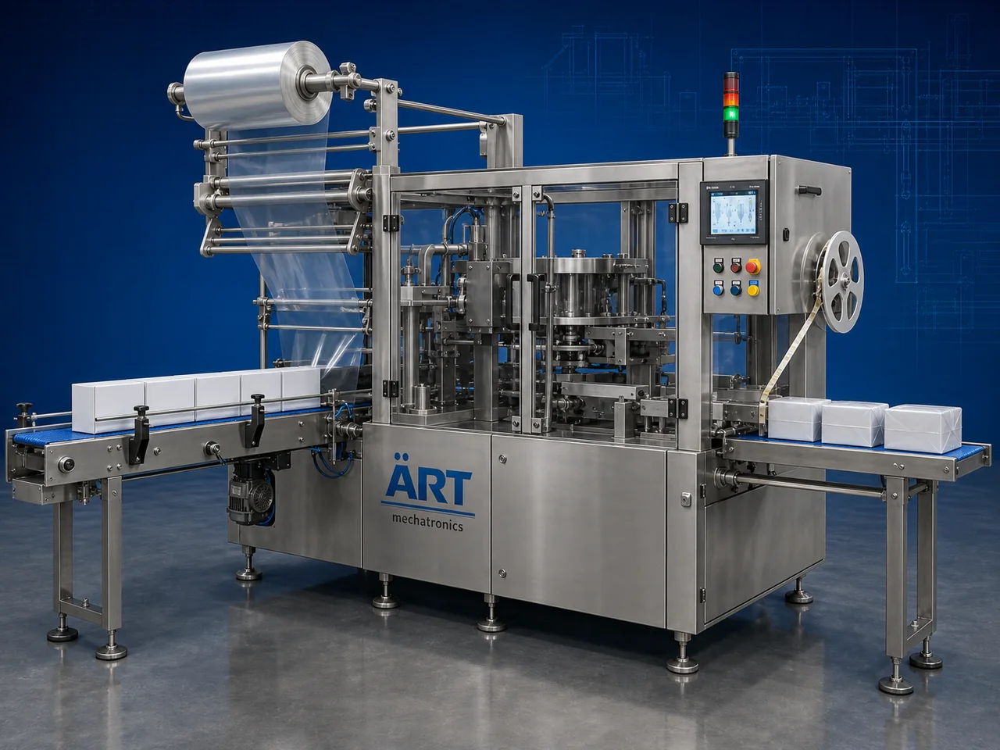

Overwrapping Machine (Automatic Unit Carton Overwrapping & Film Wrapping System)
An Overwrapping Machine, also known as a Cellophane Wrapping Machine, Carton Overwrapping Machine, Unit Carton Wrapping Machine, or Automatic Film Overwrapping Machine, is an advanced industrial packaging solution designed for automatic carton feeding, film wrapping, folding, sealing, tear tape…

About the Overwrapping Machine
Overwrapping systems are widely used for: ✔ Unit carton overwrapping ✔ Mono carton wrapping ✔ Cellophane wrapping applications ✔ Tobacco pack overwrapping ✔ Cosmetic box wrapping ✔ Pharmaceutical carton wrapping ✔ FMCG retail packaging ✔ Tamper-proof retail packaging
The machine improves: ✔ Product presentation ✔ Packaging protection ✔ Shelf appeal ✔ Moisture protection ✔ Tamper resistance ✔ Packaging consistency ✔ Production efficiency
Industrial overwrapping machines use: ✔ Servo synchronized film feeding systems ✔ PLC and HMI automation controls ✔ Precision carton handling systems ✔ Folding and heat sealing mechanisms ✔ Tear tape application systems
to automatically wrap cartons with transparent film for superior retail packaging quality and product protection.
Overwrapping machines are widely used in industries such as:
Shisha tobacco industries Cigarette industries Pharmaceutical industries Cosmetic industries FMCG industries Food processing industries Perfume industries Consumer product industries
where premium retail packaging and tamper-proof overwrapping are essential.
The machine is highly suitable for: ✔ Cigarette pack overwrapping ✔ Shisha tobacco carton wrapping ✔ Cosmetic box wrapping ✔ Pharmaceutical carton wrapping ✔ FMCG carton wrapping ✔ Premium retail product packaging
ART Mechatronics offers high-performance overwrapping machines, engineered for continuous industrial operation, accurate wrapping, premium sealing quality, and reliable long-term packaging automation.
Working Principle of Overwrapping Machine
- 1. Carton Feeding Unit cartons are loaded onto automatic feeding conveyor system.
- 2. Film Feeding Process Transparent wrapping film is automatically fed into wrapping section.
Servo synchronization ensures smooth film feeding and accurate wrapping operation.
- 3. Carton Wrapping Operation Machine wraps cartons using: ✔ Transparent film wrapping ✔ Cellophane wrapping ✔ Fold wrapping systems ✔ Tight film wrapping mechanisms
for premium retail packaging appearance.
- 4. Sealing & Tear Tape Application Machine performs: Heat sealing Fold sealing Tear tape application Tamper-proof wrapping
for secure and retail-ready packaging quality.
- 5. Coding & Inspection Integration Optional systems include: Batch coding Date printing QR code printing Vision inspection Barcode systems
- 6. Finished Product Discharge Finished wrapped cartons discharged automatically for: Case packing Retail display Dispatch operations Distribution systems
Types of Overwrapping Machines
- 1. Cellophane Overwrapping Machine Designed for: ✔ Transparent retail wrapping applications
- 2. Cigarette Pack Overwrapping Machine Suitable for: ✔ Cigarette and tobacco pack wrapping systems
- 3. Cosmetic Box Overwrapping Machine Uses: ✔ Cosmetic and perfume box packaging systems
- 4. Pharmaceutical Carton Overwrapping Machine Designed for: ✔ Medicine and healthcare carton wrapping systems
- 5. Servo Driven Overwrapping Machine Suitable for: ✔ Precision high-speed overwrapping operations
- 6. Fully Automatic Overwrapping System Designed for: ✔ Complete industrial retail packaging automation lines
Industries Using Overwrapping Machines
🚬 Tobacco Industry Cigarette packs, shisha tobacco cartons, oral nicotine products, and smokeless tobacco overwrapping systems. 💊 Pharmaceutical Industry Tablet cartons, medicine boxes, and healthcare packaging overwrapping systems. 🧴 Cosmetic & Perfume Industry Perfume boxes, cosmetic cartons, skincare products, and premium retail wrapping systems. 🛒 FMCG Industry Consumer product carton overwrapping systems. 🍃 Food Processing Industry Premium food carton and retail packaging overwrapping systems.
Features & Advantages
✔ High-speed automatic carton overwrapping operation ✔ Premium transparent retail wrapping appearance ✔ Tamper-proof and moisture-protected packaging ✔ PLC and servo automation control systems ✔ Improves product shelf presentation and protection ✔ Reduces packaging wastage and labor dependency ✔ Supports multiple carton sizes and formats ✔ Reliable long-term industrial performance ✔ Smooth and continuous wrapping operation
Technical Highlights
Machine Type: Automatic overwrapping machine Cellophane wrapping machine Carton film wrapping machine Packaging Material: BOPP films Cellophane films Transparent wrapping films Features: PLC control system Servo synchronization Touchscreen HMI Tear tape application system Batch coding integration Sealing Type: Heat seal Fold seal Tamper-proof seal Automation: Semi-automatic Fully automatic industrial systems
Turnkey Overwrapping Solutions
ART Mechatronics offers: Complete overwrapping systems Automatic film wrapping solutions Packaging automation integration systems Conveyor synchronization systems Installation & commissioning After-sales service & AMC
Why Choose Art Mechatronics
Expertise in industrial packaging and automation systems Customized overwrapping solutions for multiple industries High-performance and durable packaging technology Advanced PLC and servo automation systems Proven industrial packaging performance across sectors
Applications
Shisha Tobacco Manufacturing Plants Cigarette Packaging Units Pharmaceutical Manufacturing Plants Cosmetic Packaging Facilities FMCG Packaging Industries Retail Packaging Industries
Industries that use the Overwrapping Machine
Get pricing & specs for the Overwrapping Machine
Share the product, target capacity, current process and plant location. These details help our engineers discuss the right machine or line configuration.
One partner, from design to start-up
ART Mechatronics designs, manufactures, installs and commissions your Overwrapping Machine solution with regional presence in India, UAE and Thailand.